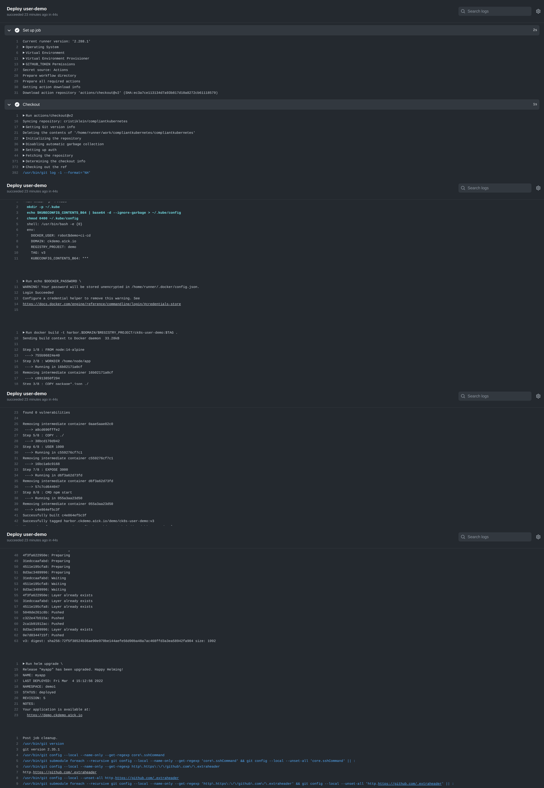

External CI/CD Integration¶
Tip
Compliant Kubernetes comes with Argo CD as an Additional Service. Integration with an external CI/CD is non-trivial and time-consuming. Therefore, we only recommend to read this page if you have an existing CI/CD solution in place and determined that migrating to Argo CD is impractical.
This page discusses integration between Compliant Kubernetes and external CI/CD solutions.
Important
Access control is an extremely important topic for passing an audit for compliance with data privacy and data security regulations. For example, Swedish patient data law requires all persons to be identified with individual credentials and that logs should capture who did what.
Therefore, Compliant Kubernetes has put significant thought into how to do proper access control. As a consequence, CI/CD solutions that require cluster-wide permissions and/or introduce their own notion of access control are highly discouraged. Make sure you thoroughly evaluate your CI/CD solution with your CISO before investing in it.
Background¶

For the purpose of Compliant Kubernetes, one can distinguish between two "styles" of CI/CD: push-style and pull-style.
Push-style or external CI/CD -- like GitLab CI or GitHub Actions -- means that a commit will trigger some commands on a CI/CD worker, which will push changes into the Compliant Kubernetes cluster. The CI/CD worker generally runs outside the Kubernetes cluster. Push-style CI/CD solutions should work out-of-the-box and require no special considerations for Compliant Kubernetes.
Pull-styles or in-cluster CI/CD -- like ArgoCD or Flux -- means that a special controller is installed inside the cluster, which monitors a Git repository. When a change is detected the controller "pulls" changes into the cluster from the Git repository. The special controller often requires considerable permissions and introduces a new notion of access control, which is problematic from a compliance perspective.
Below we show how to use external CI/CD solutions.
External CI/CD¶
External CI/CD works pretty much as if you would access Compliant Kubernetes from your laptop, running kubectl or helm against the cluster, as required to deploy your application. However, for improved access control, the KUBECONFIG provided to your CI/CD pipeline should employ a ServiceAccount which is used only by your CI/CD pipeline. This ServiceAccount should be bound to a Role which gets the least permissions possible. For example, if your application only consists of a Deployment, Service and Ingress, those should be the only resources available to the Role.
To create a KUBECONFIG for your CI/CD pipeline, proceed as shown below.
Pre-verification¶
First, make sure you are in the right namespace on the right cluster:
kubectl get nodes
kubectl config view --minify --output 'jsonpath={..namespace}'; echo
You can only create a Role which is as powerful as you (see Privilege escalation prevention). Therefore, check what permissions you have and ensure they are sufficient for your CI/CD:
kubectl auth can-i --list
Note
What permissions you need depends on your application. For example, the user demo creates Deployments, HorizontalPodAutoscalers, Ingresses, PrometheusRules, Services and ServiceMonitors. If unsure, simply continue. RBAC permissions errors are fairly actionable.
Create a Role¶
Next, create a Role for you CI/CD pipeline. If unsure, start from the example Role that the user demo's CI/CD pipeline needs.
kubectl apply -f ci-cd-role.yaml
Dealing with Forbidden or RBAC permissions errors
Error from server (Forbidden): error when creating "STDIN": roles.rbac.authorization.k8s.io "ci-cd" is forbidden: user "demo@example.com" (groups=["system:authenticated"]) is attempting to grant RBAC permissions not currently held:
If you get an error like the one above, then it means you have insufficient permissions on the Compliant Kubernetes cluster. Contact your administrator.
Create a ServiceAccount¶
User accounts are for humans, service accounts for robots. See User accounts versus service accounts. Hence, you should employ a ServiceAccount for your CI/CD pipeline.
The following command creates a ServiceAccount for your CI/CD pipeline:
kubectl create serviceaccount ci-cd
Create a RoleBinding¶
Now create a RoleBinding to bind the CI/CD ServiceAccount to the Role, so as to grant it associated permissions:
NAMESPACE=$(kubectl config view --minify --output 'jsonpath={..namespace}')
kubectl create rolebinding ci-cd --role ci-cd --serviceaccount=$NAMESPACE:ci-cd
Create a Secret with a token¶
Now create a secret for the ServiceAccount that Kubernetes will populate with a token:
kubectl apply -f - <<EOF
apiVersion: v1
kind: Secret
metadata:
name: ci-cd
annotations:
kubernetes.io/service-account.name: ci-cd
type: kubernetes.io/service-account-token
EOF
Extract the KUBECONFIG¶
You can now extract the KUBECONFIG of the ServiceAccount:
SECRET_NAME=ci-cd
server=$(kubectl config view --minify --output 'jsonpath={..cluster.server}')
cluster=$(kubectl config view --minify --output 'jsonpath={..context.cluster}')
ca=$(kubectl get secret $SECRET_NAME -o jsonpath='{.data.ca\.crt}')
token=$(kubectl get secret $SECRET_NAME -o jsonpath='{.data.token}' | base64 --decode)
namespace=$(kubectl get secret $SECRET_NAME -o jsonpath='{.data.namespace}' | base64 --decode)
echo "\
apiVersion: v1
kind: Config
clusters:
- name: ${cluster}
cluster:
certificate-authority-data: ${ca}
server: ${server}
contexts:
- name: default-context
context:
cluster: ${cluster}
namespace: ${namespace}
user: default-user
current-context: default-context
users:
- name: default-user
user:
token: ${token}
" > kubeconfig_ci_cd.yaml
The generated kubeconfig_ci_cd.yaml can then be used in your CI/CD pipeline.
Note that, KUBECONFIGs -- especially the token -- must be treated as a secret and injected into the CI/CD pipeline via a proper secrets handing feature, such as GitLab CI's protected variable and GitHub Action's secrets.
Example: GitHub Actions¶
Please find a concrete example for GitHub Actions here. Below is the produced output:
